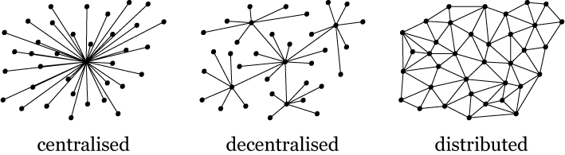

Blockchain: A Distributed ledger
Assets
- Anything that is capable of being owned or controlled to produce value, is an asset.
- Tangible Assets
- Asset that has a physical form.
- e.g. Machinery, Buildings and Land
- Intangible Assets
- Asset that is not physical in nature.
- Intangible assets are subdivide as
- Financial, e.g. bond
- Intellectual e.g. patents
- Digital e.g. music
Ledger
- Ledger is a principal book (or computer file) for recording asset transfer between participants.
- Distributed ledger(shared ledger) is a ledger that is replicated, synchronized and spread across multiple sites, countries, and/or institutions.
What is Blockchain

- Blockchain is an append-only distributed ledger, where records are stored in blocks, and blocks form a chain.
- Every block contains transactions, that can be verified by any node in the network
- Consensus is procedure to have an accurate Blockchain at every node.
Blockchain Video
Blockchain Types
- Public ledger: Decentralized, anyone can read and send tranasctions, e.g. Bitcoin, Ethereum, Hyperledger
- Private ledger: Centralized under one organization which controls the right to view ans send transactions, e.g. Bankchain
Blockchain Capabilities
Internet of Value
Consensus: A general agreement
Consensus achieved using Proof-of-Work.
- New transactions are broadcast to all nodes.
- Each node collects new transactions into a block.
- Each node works on finding a difficult proof-of-work for its block.
- When a node finds a proof-of-work, it broadcasts the block to all nodes.
- Nodes accept the block only if all transactions in it are valid and not already spent.
- Nodes express their acceptance of the block by working on creating the next block in the chain, using the hash of the accepted block as the previous hash.
- Nodes always consider the longest chain to be the correct one and will keep working on extending it.
Consensus defines types of Blockchain
- Permissionless Blockchain: Every node in the network participate in consensus procedure, e.g. Bitcoin Blockchain (Proof of Work)
- Permissioned Blockchain: Only Selected nodes(validators, e.g. Government or trusted nodes) participate in consensus procedure e.g. Hyperledger Blockchain
Smart Contract
Privacy and Anonymity in Internet of Value
- Pseudonymity:
Public keys must not reveal real identities.
Transactions must not reveal real identities. - Unlinkability: It is not possible to link different pseudonyms of a real identities.
- Anonymity = Pseudonymity and Unlinkability
- Privacy is provided by encrypting the application data.
Anonymity Analysis of Bitcoin
Future applications of Blockchain
- Supply Chain Management
- Identity Management
SCM without Blockchain

SCM with Blockchain